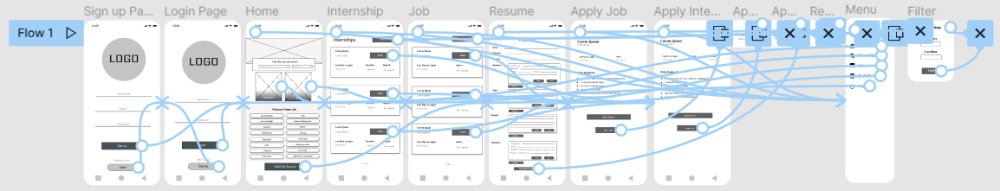
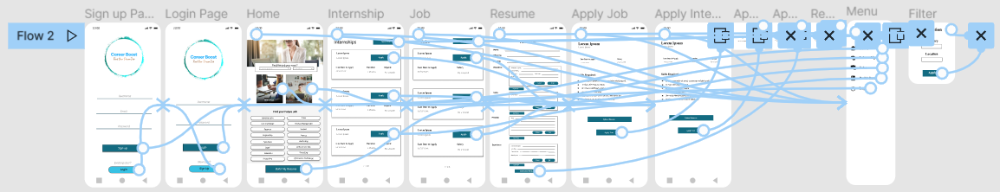

Most college grads have no idea how to find and contact recruiters in order to find work once they graduate. Career Booster aids students in joining the corporate world and embarking on their corporate journey.
Design an App to assist recent college graduates in finding employment and launching their corporate careers.
UX designer leading the app and responsive website design for job search
Conducting interviews, paper and digital wireframing, low and high-fidelity prototyping, conducting usability studies, accounting for accessibility, iterating on designs, determining information architecture, and responsive design.
I did a quick ideation exercise to come up with ideas for how to address gaps identified in the competitive audit. My focus was specifically on how to make it easy for the users to search and apply for jobs or internships
After ideating and drafting some paper wireframes, I created the initial designs for the job search app. These designs focused on how the user can easily search and apply for desired job
To prepare for usability testing, I created a low-fidelity prototype that connected the user flow of how the user can use this job search app to find and apply for their desired job option.
The high-fidelity prototype followed the same user flow as the low-fidelity prototype, including design changes made after the usability study.
Clear User Flow makes it easier for the user to search and apply for the job
Easy options to filter job according user requirement
Easy to use option so that every can easily understand what to do next how to move through various pages how to filter and other such options
With the app designs completed, I started work on designing the responsive website. I used the Food Saver sitemap to guide the organizational structure of each screen’s design to ensure a cohesive and consistent experience across devices.
The designs for screen size variation included mobile, tablet, and desktop. I optimized the designs to fit specific user needs of each device and screen size.
Users stated that the app made it easier for them to search for and apply for jobs, and there is also an option within the app that allows them to enter their qualification and other details, and they can download resumes in just a couple of minutes. The app is so simple to use that the user can use it to get their dream job.